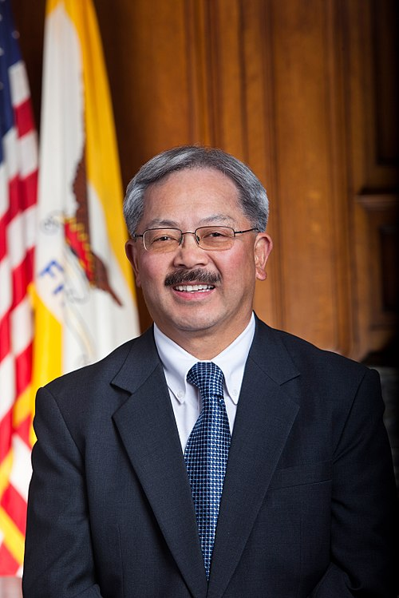

Lee was born in 1952 in the Beacon Hill neighborhood of Seattle, Washington.[3][4] His parents immigrated to the United States from Taishan, Guangdong, China, in the 1930s.[3] Lee's father, Gok Suey Lee, fought in the Korean War, worked as a cook, and managed a restaurant in Seattle.[3][5] He died when Lee was 15.[5] His mother was a seamstress and waitress.[6] Lee had five siblings. He attended Franklin High School,[7] before graduating summa cum laude from Bowdoin College in Maine in 1974, completed a year overseas as a Watson Fellow, and then graduated from the University of California, Berkeley, School of Law in 1978.
